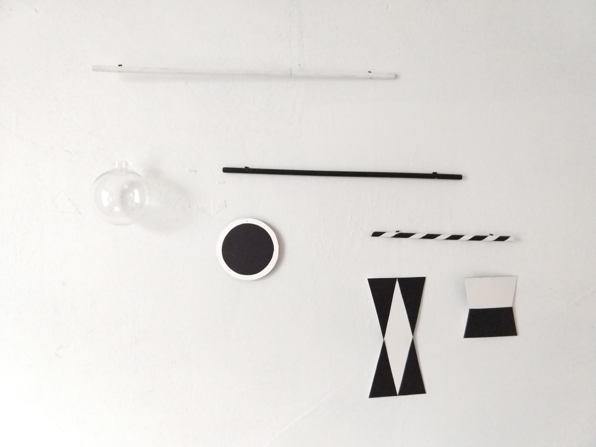
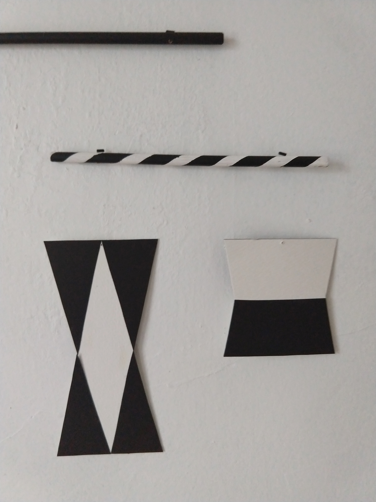
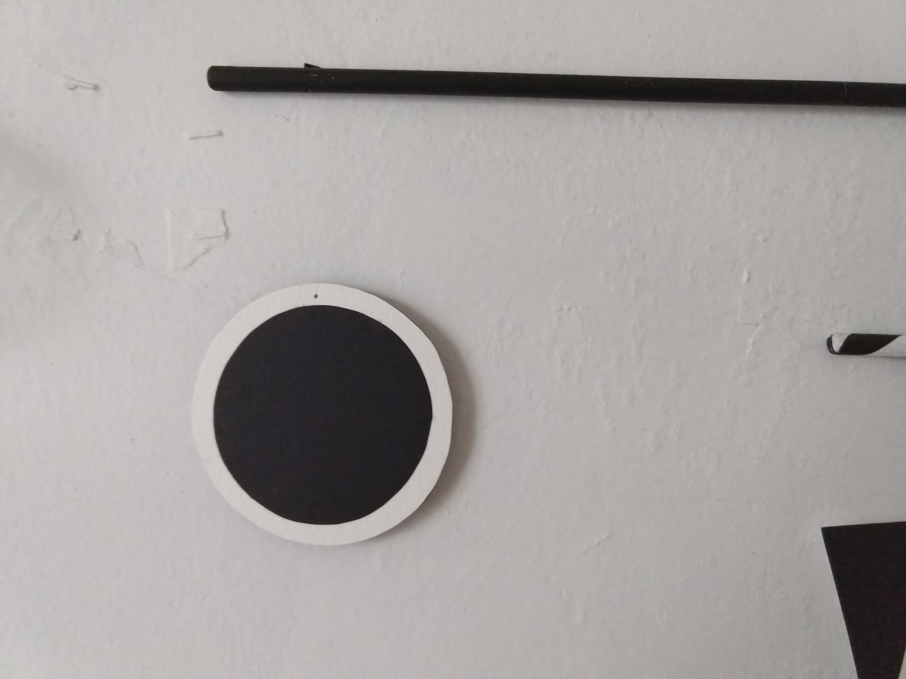
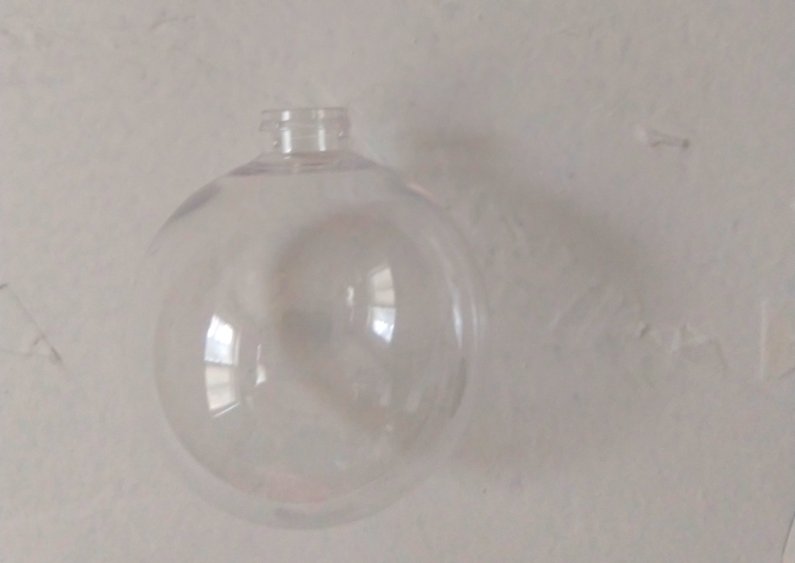
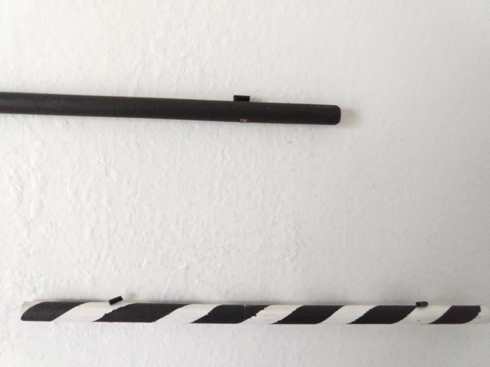

The Montessori Mobiles: Murani
Making the mobiles was not only a fun experience but well worth the effort
Part 1: The Murani Mobile

This mobile is presented first, and while there are many other black and white mobiles out there that could be presented at 1 - 2 weeks, I think there is a lovely elegance to this one (not to mention being the one that follows the pedagogy)!
Materials
- black card stock (construction paper is fine too but I like the weight of card stock)
- white card stock (or construction paper)
- 36 cm dowel painted white
- 30 cm dowel painted black
- 18 cm dowel painted white, with black stripes (I’ll talk about doing this)
- hack saw (for cutting the dowel)
- clear sphere
- clear sewing or jewlery thread (I’ll talk more about this too)
- drill with 1/8th inch drill bit (not strictly necessary)
Step 1 - I like this video for cutting out the 2D shapes https://www.youtube.com/watch?v=npf3c7r7DkU. There are print outs, but I found that cutting the shapes out this way felt more sturdy and precise (although you do need to be comfortable with a ruler and compass!)


For the sphere I was hoping to find an appropriate sized glass one because I limit the plastic in my house as much as possible, however I wasn’t able to find one readily so I used a plastic orniment (it is a visual, not tactile, mobile so I decided it was an acceptable consession). The orniment came with a cheap metal cap, which I removed, and drilled a whole through the “neck” to hang it - this way there isn’t the visual distraction of the metal cap. In the picture, you can see the “neck” where I created a hole to hang it.

Step 2 - All you need is one (3 or 4 foot long) 3/8th inch dowel, a hack saw, black and white acrylic paint, and thin electrical tape (I actually cut the tape I had in half because I wanted a thinner stripe). I like this method of making the striped dowel https://www.youtube.com/watch?v=P2WSZMggzH4 because I think the result is more attractive than the way it was done in the first video (vertical stripes made by leaving tape on the dowel, instead of blocking out one long coiled stripe with tape to paint, and then removing the tape). This video is in french but have no fear, you don’t need the audio to follow whats going on.
Step 3 - Hanging the shapes/clear globe was the trickiest part, and I find little discussion of it in other DIY tutorials! There are a numeber of different elements to consider, which I will outline.
How to attach the clear “thread” to the dowels. I ended up opting for drilling holes in the dowels for the objects, including lower dowels, but tied the thread at the center points so that they could be slid from one side to another in order to adjust the balance. In practice, this meant I drilled parallel holes, 3 cm from each end, on each dowel. Then on each dowel, somewhere in between these two holes, I tied the third strand of invisible thread, as tight as possible, around the dowel.
What to attach the mobile pieces with. I experimented with a number of different types of threads and had the most sucess with very fine clear thread. The fishing line was so thick that it held the curve of the spool it had been wrapped around, even after hanging for a number of days, and also had a blue-ish color to it that made it very easy to see. Jewlery “thread” was much less visible from afar, but it still held enough curl to it that it seemed to be causing the dowels and shapes to not hang down perfectly vertical. That being said it is a much better option if you can’t find clear thread. Similarly, I would definitely use jewlery thread if you have any limitations with finger dexterity or fine detail visual limitations - it is incredibly thin and hard to see so it can be frustrating to work with.
If you are able to find clear thread in your local craft store, or happen to have it laying around your house like I did, I recommend using beads at the points where the thread is going through a dowel hole. It is so thin that I found this to be a good solution to the issue of trying to make a knot that was big enough to prevent the thread just sliding out of the hole.

Lengths of threads to hang the objects. There are many diagrams out there with relative placements of the objects to each other i.e. the black and white circle should be hung from one end of the black dowel, with the top in line with the bottom of the clear globe, but they don’t have measurements included in them. This is my humble opinion of what works well.